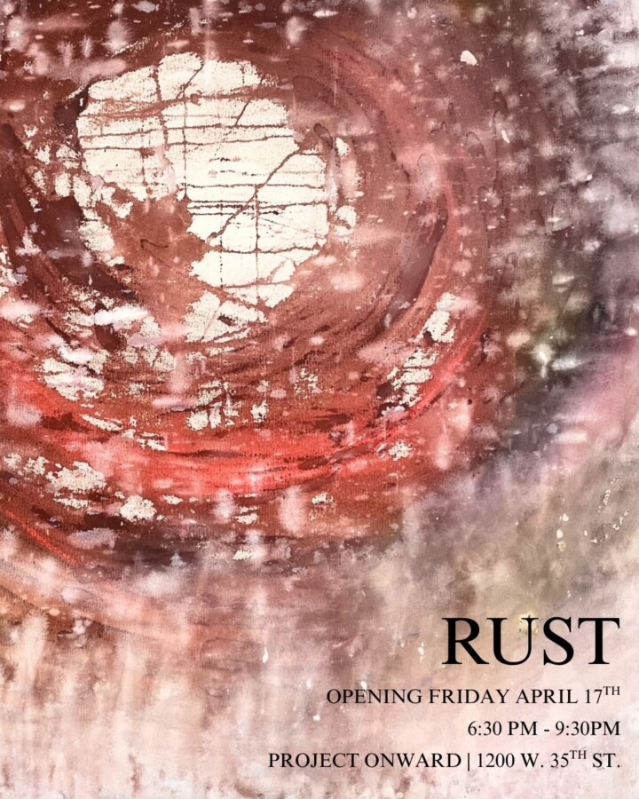

Rust
Curated by T Chang, ”Rust” explores deterioration as both an ending and a transformation. Works by several Project Onward artists reflect on the decline of social, spiritual, organic, and personal structures and the uncertainty of what follows. Rather than resisting collapse, the exhibition celebrates the quiet resilience that one can find in spaces of neglect and breakdown. The exhibition considers decline as a generative force, where chaos can give way to new forms of meaning.
Pedro Basantes, Ken Bortman, Bill Douglas, Lindsay Brashler, Andrew Hall, Michelle Livingston, Frederick Nitsch, Ricky Willis, Alita Van Hee, and George Zuniga